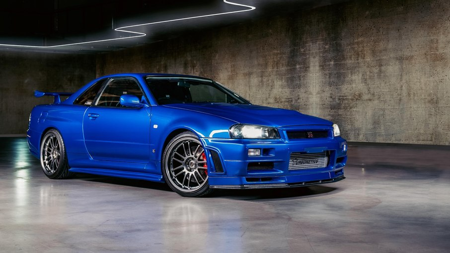

Nissan GT-R Skyline
O Nissan GT-R Skyline é um ícone entre os supercarros, conhecido por seu design robusto e desempenho impressionante. Desde sua introdução, ele redefiniu o que significa ser um carro esportivo, combinando engenharia de ponta com uma história de sucesso nas pistas de corrida. Ele foi reconhecido mundialmente depois de aparecer no filme Velocidade e Fúria, sendo dirigido pelo falecido ator Paul Walker, conhecido no filme como Brian O'Conner.
- 
Características do Nissan GT-R:
- Desempenho Inigualável
- Motor V6 biturbo de 3.8 litros, até 600 cavalos de potência
- Acelera de 0 a 100 km/h em apenas 2,9 segundos
- Tração integral inteligente para máxima aderência
- Design Aerodinâmico
- Entradas de ar otimizadas para alta performance
- Spoiler traseiro ajustável e difusor de carbono
- Estabilidade e eficiência em altas velocidades
- Tecnologia e Conforto
- Painel digital com informações em tempo real
- Assentos esportivos em couro para maior conforto
- Materiais premium e tecnologias avançadas no interior
Veja o Nissan GT-R Skyline em ação: